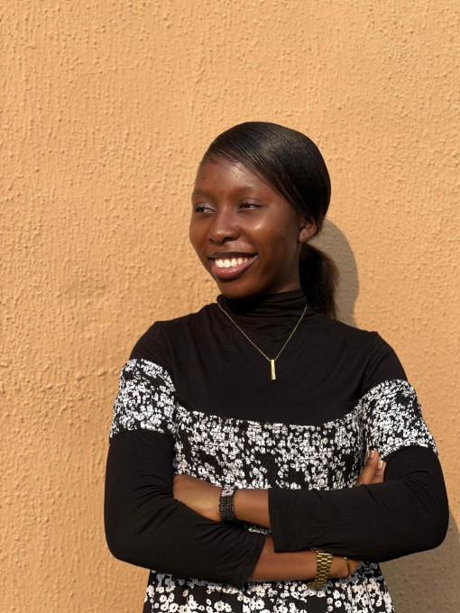
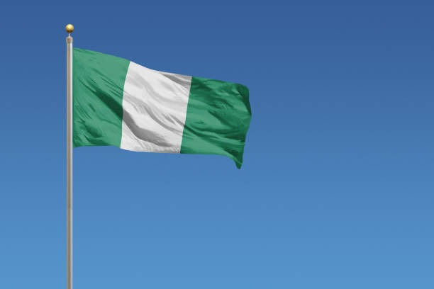

About Me

My name is Daniella but I preferred to be called Danny. I was born in Nigeria and I have live in Benin City since my birth without travelling out. I am currently a student on BYU-IDAHO and I love what I am currently studying online. I love my family so much. I like baking for fun and I love to trying new recipes.
Benin City, Nigeria

Nigeria is located in the continent of Africa. It is oftened referred to as the giant of Africa. It is a home to alot of persons and it has rich cultural artifacts. Nigeria is a very cultural place that comprise differeent ethnic groups. The capital of Nigeria is the Federal Capital Territory, Abuja.